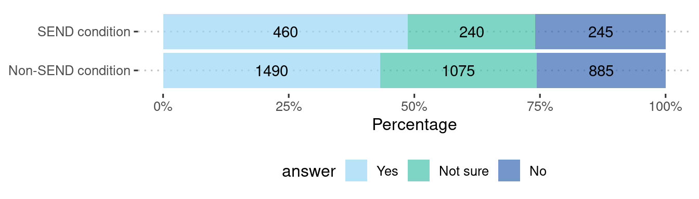
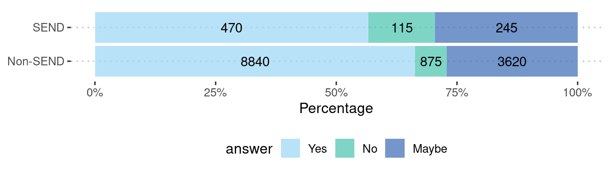
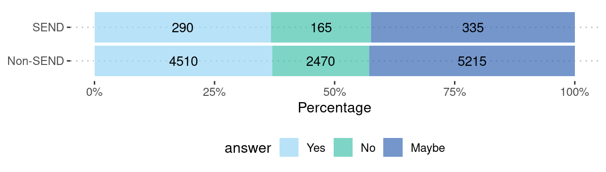
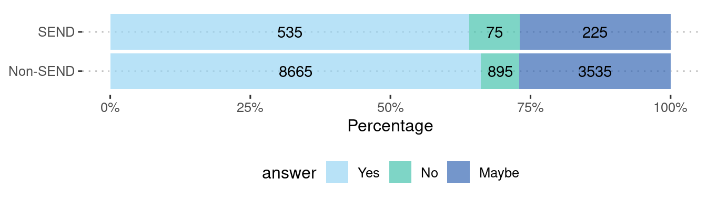
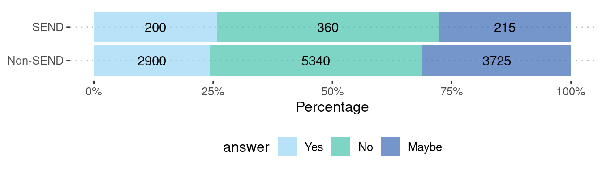
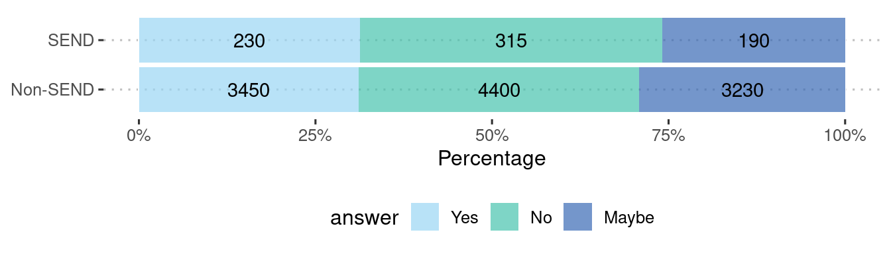

Abstract
The number of pupils across England receiving support for special educational needs and disabilities (SEND) continued its trend with an increase of 4.7% in 2022/23. There is an urgency to understand the educational experiences of young people with SEND, with disparities in school experiences compared with those without SEND. The SEND review, by the Department for Education, emphasized the necessity of directly engaging with young people with SEND to shape policy and practice.
In our analysis of the latest YPHWS cohort data, 980 students out of 16292 indicated they have SEND. We investigated the relationship between students’ SEND status, their perception of school support, and their aspirations, compared to peers.
| Answer | Number | % |
|---|---|---|
| Non-SEND | 15310 | 94 |
| SEND | 980 | 6 |
: Summary count of students with and without SEND (all respondents) {#tbl-first}
| Answer | Number | % |
|---|---|---|
| Non-SEND condition | 3565 | 78.4 |
| SEND condition | 980 | 21.5 |
: Summary count of students with and without SEND (respondents with a condition) {#tbl-second}
We observed that students with SEND were more likely to feel supported by their school than those with non-SEND conditions. However, individuals with SEND were less likely to express certainty in continuing their education, or planning to get a job after school, compared to those without SEND.
Methods
We look at the level of support provided by schools to individuals with SEND, alongside potential disparities in aspirations among this demographic compared with those without SEND. Utilising the YPHWS, we asked questions pertaining to an individual’s conditions, educational environment, and post-school aspirations of participants.
Specifically, students were asked Do you have any special education need(s) or learning difficulties?, with binary response options of yes or no. For their perception of school support, students were asked Do you feel supported by your school and feel they offer you help with any difficulties you have?, with response options of yes, no, not sure, or prefer not to say. Finally, students were asked What do you plan to do as a next step after leaving school?, with yes, no, or maybe response options to statements including continuing in education, getting a job, and starting a family (listed in full below).
Aspiration questions
The following options were provided as responses to the questions What do you plan to do as a next step after leaving school?:
- Plan to continue in education after leaving school
- Plan to start a family after leaving school
- Plan to get a job after leaving school
- Aren’t sure what they want to do after leaving school
- Have other plans after leaving school
- Plan to training for a skilled job after leaving school
We performed a chi-squared test for SEND vs Non-SEND for the school support question, and each of the different prospects questions. This test informs us if there is a statistically significant association. Note, the numbers displayed in the blog post tables have been suppressed to the nearest 5 to prevent disclosure, but the actual chi-squared tests have been performed on the raw numbers.
Note: The school support question was only asked to those how answered yes to having a condition. Therefore, the analysis for this question compares those with SEND to those with Non-SEND conditions (physical, mental, etc.), and the sample is smaller than the full YPHWS sample. All aspiration questions are comparing SEND to Non-SEND in the whole sample.
More on chi-squared tests
A chi-squared test is a statistical method used to examine the independence of two categorical variables. It assesses whether the observed frequencies in a contingency table differ significantly from what we would expect by chance.
We create a contingency table that organizes the responses into rows (SEND, Non-SEND) and columns (school support, or aspiration answers). The test compares the observed frequencies in each cell of the table with the expected frequencies assuming no relationship between the variables.
If the result is statistically significant (lower than the p-value threshold, usually set at a <0.05), we conclude that the variables are associated. More about chi-squared tests can be found at: BMJ - The Chi squared tests
Notes: - The chi-squared test does not confirm causation, it only identifies associations - These analyses are cross-sectional and unadjusted - All YPHWS responses were self-reported
Results
School support
|
|
No
|
Not sure
|
Yes
|
|---|---|---|---|
|
Non-SEND condition
|
885 (25.7%)
|
1075 (31.2%)
|
1490 (43.2%)
|
|
SEND condition
|
245 (25.9%)
|
240 (25.4%)
|
460 (48.7%)
|
: Counts and percentages table {#tbl-first}
|
Significance
|
p-value
|
|---|---|
|
very statistically significant
|
0.004
|
: Chi-square results {#tbl-second}
Graph
Aspirations
Education
| No | Maybe | Yes | |
|---|---|---|---|
| Non-SEND | 3620 (27.1%) | 875 (6.6%) | 8840 (66.3%) |
| SEND | 245 (29.5%) | 115 (13.9%) | 470 (56.6%) |
: Counts and percentages table {#tbl-first}
| Significance | p-value |
|---|---|
| very statistically significant | 0 |
: Chi-square results {#tbl-second}
Graph

Training
| No | Maybe | Yes | |
|---|---|---|---|
| Non-SEND | 5215 (42.8%) | 2470 (20.3%) | 4510 (37%) |
| SEND | 335 (42.4%) | 165 (20.9%) | 290 (36.7%) |
: Counts and percentages table {#tbl-first}
| Significance | p-value |
|---|---|
| not statistically significant | 0.9 |
: Chi-square results {#tbl-second}
Graph

Job
| No | Maybe | Yes | |
|---|---|---|---|
| Non-SEND | 3535 (27%) | 895 (6.8%) | 8665 (66.2%) |
| SEND | 225 (26.9%) | 75 (9%) | 535 (64.1%) |
: Counts and percentages table {#tbl-first}
| Significance | p-value |
|---|---|
| statistically significant | 0.03 |
: Chi-square results {#tbl-second}
Graph

Start a family
| No | Maybe | Yes | |
|---|---|---|---|
| Non-SEND | 3725 (31.1%) | 5340 (44.6%) | 2900 (24.2%) |
| SEND | 215 (27.7%) | 360 (46.5%) | 200 (25.8%) |
: Counts and percentages table {#tbl-first}
| Significance | p-value |
|---|---|
| not statistically significant | 0.1 |
: Chi-square results {#tbl-second}
Graph

Unsure
| No | Maybe | Yes | |
|---|---|---|---|
| Non-SEND | 3230 (29.2%) | 4400 (39.7%) | 3450 (31.1%) |
| SEND | 190 (25.9%) | 315 (42.9%) | 230 (31.3%) |
: Counts and percentages table {#tbl-first}
| Significance | p-value |
|---|---|
| not statistically significant | 0.1 |
: Chi-square results {#tbl-second}
Graph

Conclusions
We explored the experiences of students with SEND. Students with SEND reported feeling more supported by their schools, than those with non-SEND conditions, though these differences were small. Notably however, even within this group, the proportion of students who felt supported was below 50%, suggesting that overall support for those with any condition is low.
When examining aspirations, we observed subtle yet significant differences. Students with SEND appeared less likely to plan on continuing their education beyond school. They were also less inclined to plan for employment after finishing school, compared to their non-SEND peers. We observed no associations between SEND status and plans for training or starting a family.
These findings recognise nuances in feelings of support and aspirations in those with SEND. Educators and policymakers should work toward a more equitable educational landscape, where every student feels supported to pursue their aspirations..